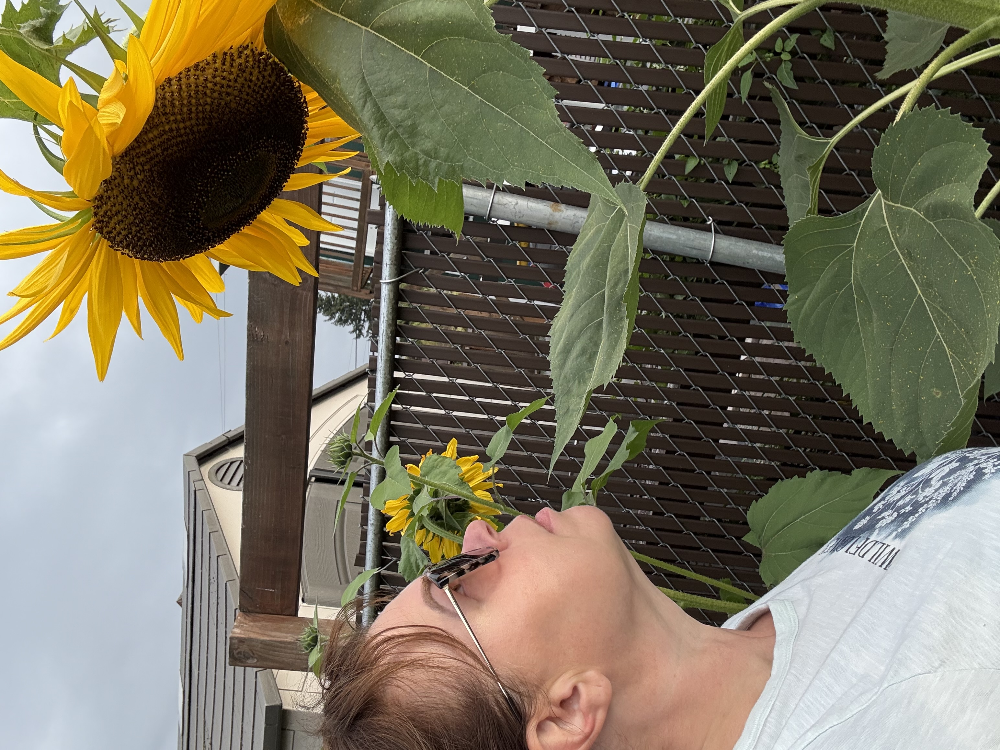
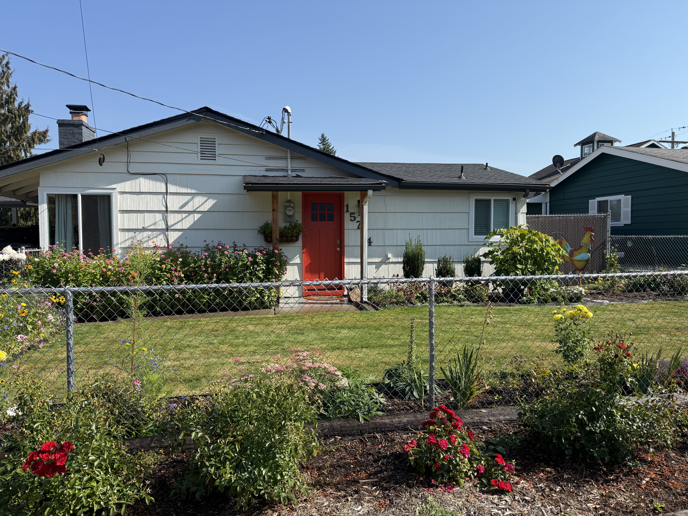
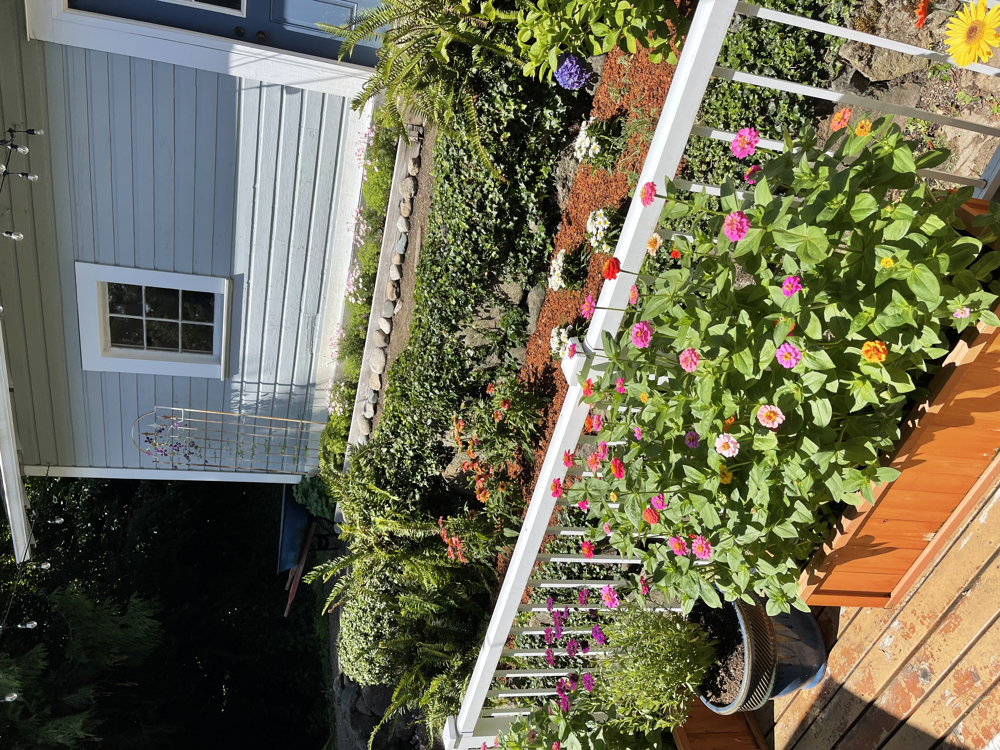

Hobbies & Interests
Heather enjoys creative projects, gardening, spending time outdoors, and making her home a welcoming place.
Gardening & Planting
Gardening is one of Heather's favorite ways to spend time outdoors. She enjoys planting and caring for flowers and plants and watching her garden grow throughout the seasons.
From choosing new plants to caring for the ones she already has, gardening gives Heather a creative way to enjoy the outdoors and make the spaces around her more beautiful.


Growing & Creating
Heather enjoys watching her plants grow and finding creative ways to bring color and personality into her surroundings. Gardening gives her the opportunity to experiment with different flowers and create spaces that change throughout the seasons.
Home & Garden
Heather's creativity extends beyond individual plants and flowers. She enjoys making her home and garden feel comfortable, colorful, and personal.
The garden has become part of the character of her home, creating an outdoor space that reflects the care and creativity she puts into it.


A Space to Enjoy
Heather's garden is also a place where she can enjoy the results of her work. The variety of flowers, greenery, and landscaping helps create an outdoor space that feels welcoming and full of life.
Something She Enjoys
Heather also enjoys finding humor and relatable moments in everyday life. One of the places she likes to find this is through Elyse Myers' videos.
Visit Elyse Myers on YouTube